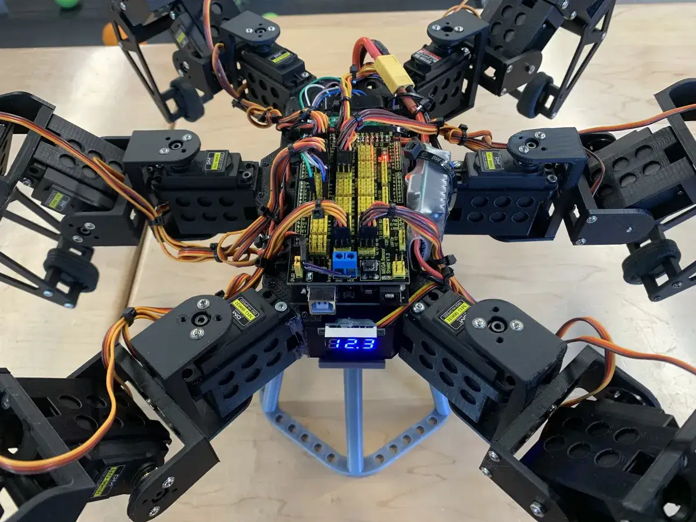

Robotics
Redesign, wiring, code, test
Hexapod Robot
Continued a previous student's hexapod and rebuilt much of the system: redesigned and reprinted parts, rewired electronics, modified control code, and tested the robot through repeated mechanical failures.